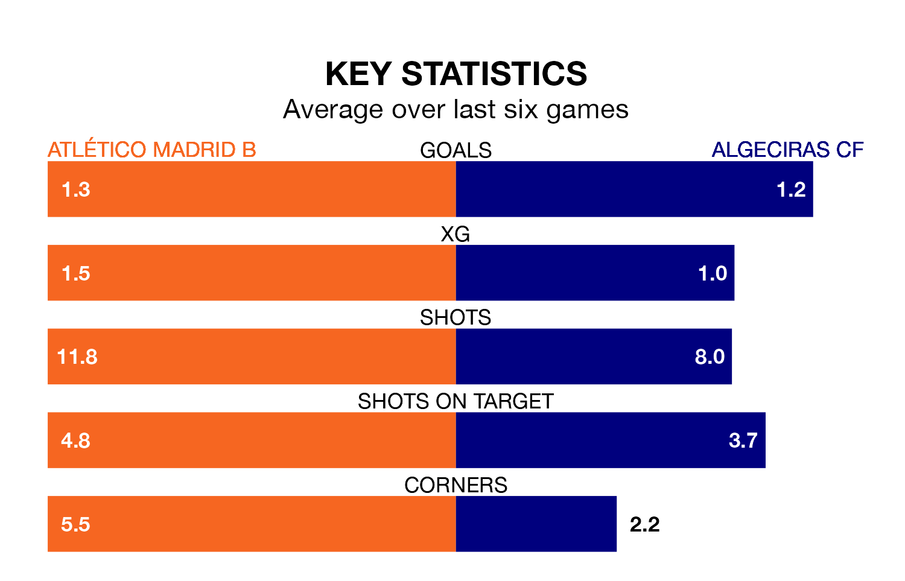

Algeciras CF make the journey to Miniestadio Cerro del Espino to play Atlético Madrid B on late Sunday looking to pick up points to end their four-game losing streak.
Algeciras's struggles have left them with just four points from their last six Primera Division RFEF Group 2 matches, while their opponents have earned 12 from a possible 18.
With 47 goals in 33 games so far this season, Atlético Madrid B are scoring more than average in the league with 1.4 goals per game. But they are conceding more than average too, letting in 39 goals at a rate of 1.2 per game.
Algeciras, meanwhile, are average scorers, with 1.1 goals per game. They have also conceded 1.1 goals per game.
In Diego Vicente Bri Carrazoni, the home side have one of the league's most on-form strikers so far this season. He has notched seven goals in 21 appearances, to sit sixth in the scoring charts.
The visitors' top scorers, with three goals each, are Javier Cueto Suárez, Iván Turrillo Caballero, Ezequiel Díaz Romero, Diego Esteban Pérez and Eric Montes Arce.
Atlético Madrid B are ninth in the table after 33 games, of which they have won 11 and drawn 12, earning 45 points.
Algeciras are two places behind Atlético Madrid B in 11th, with 10 wins and 12 draws putting them on 42 points.
Atlético Madrid B's last match was on April 21, a 1-0 win against UD Ibiza, with Assane Ndiaye Dione getting the goal for Atlético Madrid B.
Algeciras lost 3-2 against Antequera CF last time out, on April 20, with Díaz Romero and Javier López Pinto Dorado on the scoresheet.
Updated: 07:59 (UTC), 26/04/24